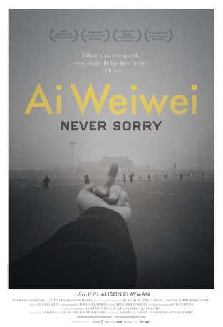

#11746 Ai Weiwei: Never Sorry *OmU*
 gesehen am 15.09.2019
gesehen am 15.09.2019
 
 IMDB-Wertung: 7.6 / 10
IMDB-Wertung: 7.6 / 10  Tomatometer: 98
Tomatometer: 98  Metascore: 81
Metascore: 81 
AI WEIWEI: NEVER SORRY is the first feature-length film about the internationally renowned Chinese artist and activist, Ai Weiwei. In recent years, Ai has garnered international attention as much for his ambitious artwork as his political provocations. AI WEIWEI: NEVER SORRY examines this complex intersection of artistic practice and social activism as seen through the life and art of China's preeminent contemporary artist. From 2008 to 2010, Beijing-based journalist and filmmaker Alison Klayman gained unprecedented access to Ai Weiwei. Klayman documented Ai's artistic process in preparation for major museum exhibitions, his intimate exchanges with family members and his increasingly public clashes with the Chinese government. Klayman's detailed portrait of the artist provides a nuanced exploration of contemporary China and one of its most compelling public figures.
Chinesisch/Englisch mit deutschen Untertiteln
Jahr: 2012
Dauer: 91 Minuten
FSK: 12
Land: USA Studio: Sundance SelectsTonspuren:
Untertitel:
Auflösung: SD (624x352) Größe: 1095 MB
Genre: Dokumentation
Regisseur: Alison Klayman
Drehbuch: Alison Klayman
Soundtrack: Ilan Isakov
Darsteller:
- Weiwei Ai als Himself
 Christiane Amanpour als Herself (archive footage)
Christiane Amanpour als Herself (archive footage)- Oliver North als Himself (archive footage)
- Dan Ai als Himself
- Lao Ai als Himself
- Lee Ambrozy als Herself
- Danqing Chen als Himself
- Ethan Cohen als Himself
- Boyi Feng als Himself
- Ying Gao als Herself
- Changwei Gu als Himself
- Yunchang He als Himself
- Tehching Hsieh als Himself
- Kankan Huang als Herself
- Huang Hung als Herself
- Zhanyang Li als Himself
- Yanping Liu als Herself
- Qing Lu als Herself
- Evan Osnos als Himself
- RongRong als Himself
- Karen Smith als Herself
- Phil Tinari als Himself
- Fen Wang als Herself
- Inserk Yang als Himself
- Hongtu Zhang als Himself
- Zuoxiao Zuzhou als Himself
- Zuoren Tan als Himself
- Chris Dercon als Himself
- Zhao Zhao als Himself
- Zhicao Yang als Himself
- Sheena Wagstaff als Herself
- Xiaobo Liu als Himself
Datei: X:\Dokumentationen\Geschichte+Politik\Ai Weiwei Never Sorry OmU (2012, FSK12, 624x352).avi seit 15.09.2019
Festplatte: HD Serien(SU-Z)+Dokus+Musik
 Es gibt insgesamt 15 Filme in der Gruppe 'Dokumentationen\Geschichte+Politik'
Es gibt insgesamt 15 Filme in der Gruppe 'Dokumentationen\Geschichte+Politik'